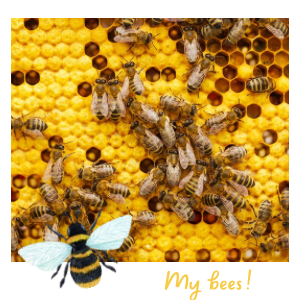

Hey guys its me again! I am really concerned about something… WHERE ARE MY BEE BESTIES?!! I used to see many before, buzzing though my beautiful flowers spreading pollen everywhere. I have to say that they were the cutes mini workers in my ecosystem, but recently I barely see a few. No more buzzings can be heard anymore. I really miss them…
The problem is that if there aren't many bees around they cannot help plants to reproduce with their pollination. So in other words: No bees= no food = hangry humans! And when humans are hangry, they are wild! Sadly my little fellas are dying because of pesticides, habitat loss, and climate chaos. The humans are the responsible ones of my lil beauties dying. Reader, pls don’t be one of them… Save my bees!
Ways to help bees:
. Buy organic or local products
. Say BYE to pesticides
. Spread the BUZZ
